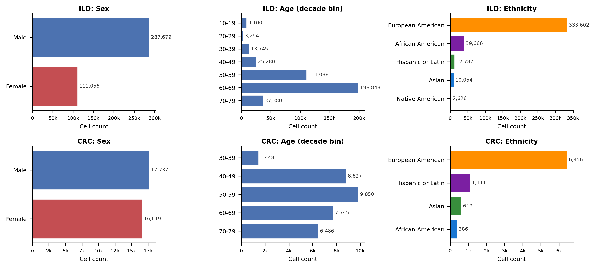
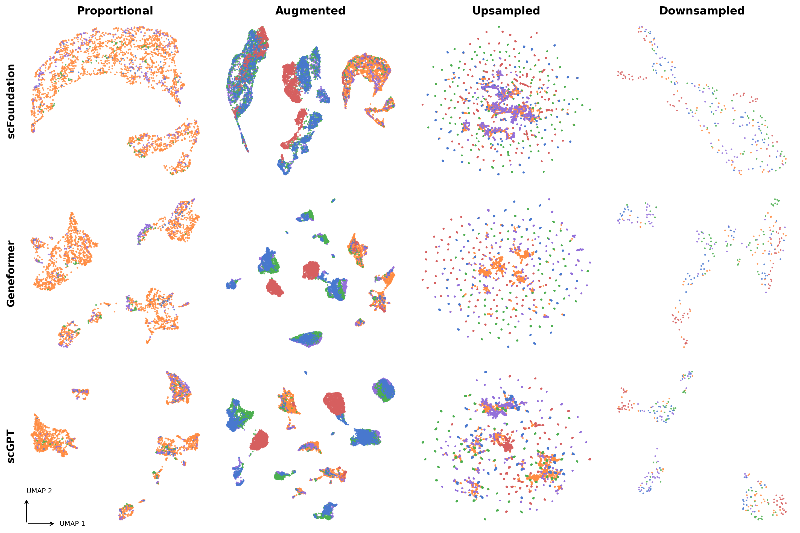
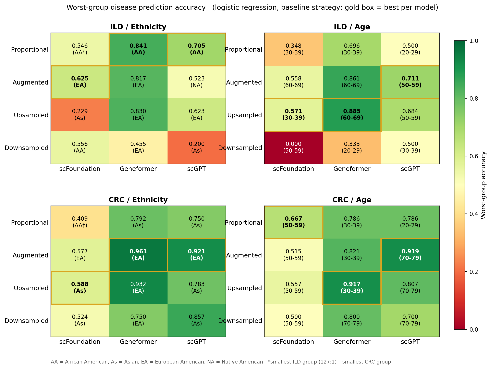
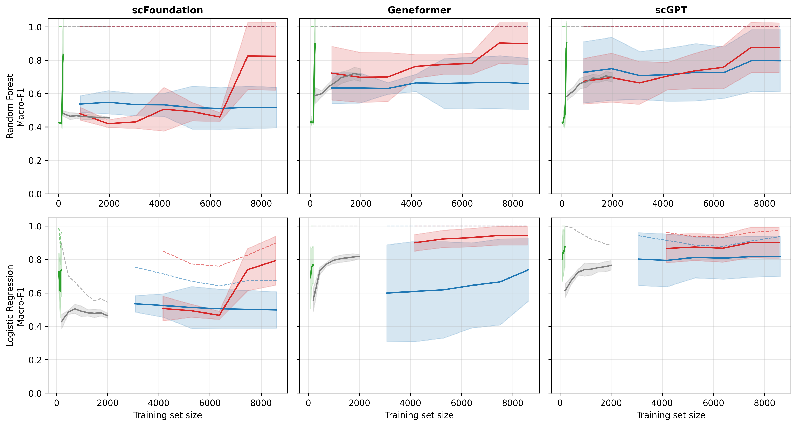
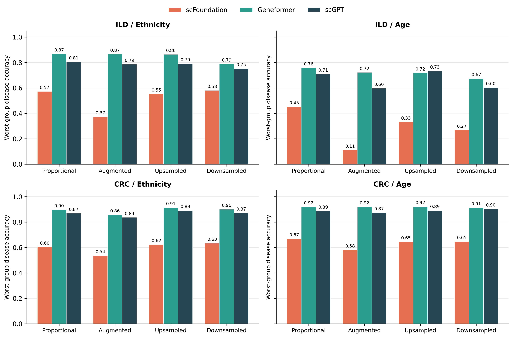

ACM-BCB · ASI 2026 Workshop · Rende, Italy
Moravian University · Brown University
Single-cell foundation models (scFMs) are increasingly used in biomedical research, yet biases can enter at every stage of the pipeline — from which donors are sampled, to how cohorts are composed, to how models amplify existing imbalances. Training datasets are often strongly imbalanced across demographic variables such as sex, age, and ethnicity, and these imbalances propagate into model representations, creating demographic representation gaps where minority groups are overlooked downstream.
We ask three questions: (Q1) Does demographic imbalance affect model learning? (Q2) Which foundation model is most robust to it? (Q3) Which rebalancing strategy most reliably restores equity? We evaluate three foundation models (scFoundation, Geneformer, scGPT) on three cohorts spanning a wide range of imbalance — interstitial lung disease (ILD), a colorectal cancer atlas (CRC), and the Asian Immune Diversity Atlas (AIDA) — and compare four rebalancing strategies (proportional, downsampling, upsampling, and scDesign3 realistic augmentation) against a Harmony baseline. All models exhibit poor integration on proportional data, with representation gaps scaling with imbalance; we give practical guidelines for choosing rebalancing strategies in real-world settings.
Every result here is reproducible from a prebuilt container: no environment setup, no path editing. Pull an image and run reproduce <model> <cohort> <demographic> — it downloads the cohort, wires in the baked model weights, and runs the whole pipeline (extract → augment → embed → benchmark → figures).
docker pull ghcr.io/fpera0248/scfm-geneformer:latest
docker run --gpus all -v "$PWD/data":/data \
ghcr.io/fpera0248/scfm-geneformer:latest \
reproduce geneformer aida ethnicity
Heads-up — budget an hour or so for the first pull. Each image is ~13–15 GB (it bundles the model, its weights, and the scDesign3 R environment). The one-time docker pull is a few minutes; on HPC, Apptainer building the .sif from the layers is the slow step and can take the better part of an hour on shared/Lustre scratch (point APPTAINER_TMPDIR/APPTAINER_CACHEDIR at local/SSD scratch to speed it up). One-time image prep, not the reproduction run.
scfoundation · geneformer · scgptild · crc · aidaethnicity · sex · ageOne command reproduces any of the nine model×cohort combinations. On HPC, use Apptainer (apptainer run --nv …). Full details in CONTAINER.md.
Single-cell foundation models learn universal representations of cellular states from millions of transcriptomic profiles. Because they are deployed directly as frozen encoders without retraining, any pattern encoded during pretraining propagates unchanged into downstream representations — making the quality and composition of their training data critical.
The datasets these models are trained on reflect structural inequities that accumulate along the whole analysis pipeline: societal biases determine which populations reach clinical care, cohort biases oversample certain groups, and models trained on imbalanced data prioritize the majority while overlooking diversity within others. In healthcare this has produced algorithms that systematically underestimate the needs of minority patients. We extend the machine-learning notion of a "generalization gap" to single-cell genomics, defining a demographic representation gap as the quantifiable difference in a model's internal representation quality across demographic groups.
We demonstrate a structured audit framework on three foundation models and three cohorts spanning a range of imbalance regimes: ILD (European American to Native American, 127:1), CRC (European American to African American, 17:1), and AIDA, a near-balanced healthy reference (Korean to Indian, 8.4:1). We incorporate scDesign3 to generate covariate-conditioned synthetic cells that expand underrepresented cell-type × demographic combinations directly in gene-expression space, and compare it against proportional sampling, naive upsampling, and downsampling.

Every model × cohort × demographic combination runs the same pipeline. From the raw cohort we build four rebalancing conditions, embed each through a frozen foundation model, and evaluate integration, cell-type recovery, and generalization.
Integration is scored with the scIB benchmark; iLISI (rescaled to [0,1]) is the primary metric — 1.0 is perfect demographic mixing in each cell's neighborhood, 0.0 complete segregation. Downstream, we predict cell type on frozen embeddings and report worst-group macro-F1 on a shared external validation set.
Yes — and it is a data-composition problem common to all three architectures, not a property of any one model. Baseline iLISI on the proportional pilots tracks the imbalance ratio of the source cohort across every model tested: as the cohort becomes less imbalanced (ILD → CRC → AIDA), baseline mixing rises in lockstep. Near-zero principal-component-regression scores confirm no model amplifies the demographic signal beyond what PCA already captures — the segregation comes from the data, and the encoder transmits it.
Baseline (proportional) iLISI by cohort, per model. Higher = better demographic mixing. The ordering tracks imbalance (ILD 127:1 → CRC 17:1 → AIDA 8.4:1) regardless of architecture.
Augmentation lifts iLISI, most strongly where the embedding has empty regions to fill. scDesign3 generates novel expression profiles that expression-aware encoders place at new coordinates: on scFoundation, BalancedAugmented lifts ILD ethnicity iLISI from 0.054 to 0.260 and CRC from 0.179 to 0.382. On AIDA, where baseline mixing is already high (0.382), augmentation adds little. Geneformer's rank-value encoding and scGPT's CLS-token aggregation map synthetic cells near existing ones, producing smaller iLISI gains.

Downsampling produces the highest iLISI — for reasons that don't reflect genuine integration. It reaches 0.640 on ILD scFoundation, but through two artifacts: neighborhoods so small (16–48 cells/group) that local mixing is trivial, and random undersampling that oversamples high-expression cells (mean library 7,363 vs 6,255, KS=0.189, p<0.001). It also discards nearly all data (240 cells vs 398,735 available) and cannot scale.
| Cohort (imbalance) | Model | Prop. | Harmony | BalAug | Ups. | Down. |
|---|---|---|---|---|---|---|
| ILD eth. (127:1) | scFoundation | 0.054 | 0.077 | 0.260 | 0.038 | 0.640 |
| Geneformer | 0.031 | 0.036 | 0.055 | 0.000 | 0.392 | |
| scGPT | 0.062 | 0.056 | 0.085 | 0.004 | 0.468 | |
| CRC eth. (17:1) | scFoundation | 0.179 | 0.091 | 0.382 | 0.265 | 0.766 |
| Geneformer | 0.079 | 0.087 | 0.139 | 0.076 | 0.545 | |
| scGPT | 0.102 | 0.112 | 0.168 | 0.118 | 0.619 | |
| AIDA eth. (8.4:1) | scFoundation | 0.382 | 0.368 | 0.390 | 0.284 | 0.376 |
| Geneformer | 0.187 | 0.402 | 0.264 | 0.156 | 0.407 | |
| scGPT | 0.248 | 0.419 | 0.303 | 0.196 | 0.474 |
Geneformer holds the highest worst-group cell-type macro-F1 on 5 of 6 cohort-axis combinations, ranked on the proportional pilot (the setting that preserves natural imbalance and reveals intrinsic robustness). On ILD ethnicity, Geneformer reaches 0.732 (Hispanic or Latin) vs scGPT 0.695 and scFoundation 0.049 (Native American). scFoundation is the weakest on every combination, 0.08–0.67 below the next model.
The gap is large enough that model choice dominates strategy choice: switching scFoundation → Geneformer improves worst-group macro-F1 by 0.56–0.71 across the six combinations — more than any rebalancing strategy delivers within a single model. The same ranking holds when predicting disease status, so it is not specific to cell-type labels.
The mechanism is architectural: Geneformer encodes each cell as a rank-ordered gene sequence, and relative gene order is more stable across donors than absolute counts. scFoundation's read-depth-aware pretraining normalizes sequencing depth but not the demographic-covariate imbalance in its corpus.

Augmentation is the only strategy that improves minority recovery without local segregation or whole-model collapse — though the gain is modest and depends on the imbalance regime. On the ILD Native American minority (scFoundation), BalancedAugmented improves F1 from 0.049 to 0.073 with non-overlapping bootstrap CIs; on AIDA Indian (scGPT) point estimates rise from 0.169 to 0.244 but CIs overlap. Effects shrink toward noise as baseline minority representation improves.

Downsampling helps minorities but collapses the overall model (Geneformer ILD Native American falls 0.750 → 0.493 as every group is forced to 16–92 cells). Upsampling is a memorization control: its F1 tracks proportional closely, but the within-cell-type mixing diagnostic flags it — duplicated cells stack at identical coordinates and form ethnically homogeneous neighborhoods.
| Cohort / Group | Model | Prop. | BA | BU | DS |
|---|---|---|---|---|---|
| ILD · Native American | scFoundation | 0.049 | 0.073 | 0.061 | 0.070 |
| Geneformer | 0.750 | 0.808 | 0.720 | 0.493 | |
| scGPT | 0.695 | 0.712 | 0.682 | 0.450 | |
| CRC · African American | scFoundation | 0.206 | 0.185 | 0.227 | 0.268 |
| Geneformer | 0.873 | 0.775 | 0.878 | 0.914 | |
| scGPT | 0.856 | 0.850 | 0.879 | 0.855 | |
| AIDA · Indian | scFoundation | 0.087 | 0.139 | 0.105 | 0.129 |
| Geneformer | 0.301 | 0.281 | 0.241 | 0.359 | |
| scGPT | 0.169 | 0.244 | 0.190 | 0.251 |

Kolmogorov–Smirnov tests on the top 100 HVGs per (group, cell type) show synthetic cells reproduce real-cell expression with high fidelity — the fraction of HVGs at p<0.05 stays ≤8% (mean 0.6%). Classifiers on foundation-model embeddings can still separate synthetic from real (AUC≈1.0), reflecting scDesign3's parametric sampling (capture inefficiency, ambient RNA, count tails). Crucially, synthetic minority cells are equally distinguishable from real cells in every group — not preferentially similar to majority structure — so the technical signature is not majority-derived and does not invalidate the iLISI gains.
Demographic bias in scFM embeddings is a data-composition problem whose severity scales with source imbalance. No single strategy dominates — match the intervention to the regime:
Distinguishing biology from learned bias is fundamentally difficult here — on disease cohorts, minority ethnicities correlate with specific disease subtypes. We frame these results as evidence of model behavior under demographic shift, not a clean measurement of bias in isolation. That segregation severity tracks input imbalance regardless of architecture points to pretraining-corpus composition as a fairness intervention upstream of any cohort-level rebalancing.
Peralta Castro, Zhang, Singh. Demographic Bias in Single-Cell Foundation Models: Evaluation and Mitigation Across Models and Cohorts. 17th ACM International Conference on Bioinformatics, Computational Biology and Health Informatics (BCB Companion '26) — 4th Workshop on Advances in Systems Immunology (ASI 2026), Rende (CS), Italy, 2026. doi:10.1145/3807502.3833077
@inproceedings{peraltacastro2026demographic,
author = {Peralta Castro, Fernando and Zhang, Jiaqi and Singh, Ritambhara},
title = {Demographic Bias in Single-Cell Foundation Models: Evaluation and Mitigation Across Models and Cohorts},
year = {2026},
booktitle = {17th ACM International Conference on Bioinformatics, Computational Biology and Health Informatics (BCB Companion '26)},
publisher = {Association for Computing Machinery},
doi = {10.1145/3807502.3833077},
isbn = {979-8-4007-2652-1}
}
Code, containers, and the full reproduction harness: github.com/fpera0248/scfm-bias-asi2026. Datasets are obtained from CZ CELLxGENE under their own licenses; the pipeline downloads them at run time.